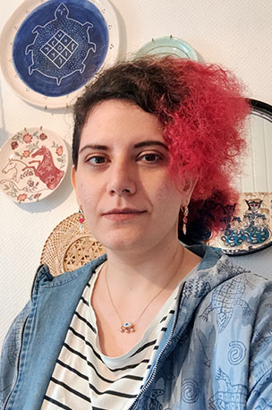

I am a Game Programmer & Designer with over 7 years of experience, a degree in Industrial Design,
and a second Bachelor's in Game Programming from Cologne Game Lab.
I designed gameplay and wrote code for over 10 game projects (student projects, game jams, and personal projects).
Working in many fields allowed me to become a versatile designer and develop diverse skills that are valuable for a Technical Designer.
Over the years, I've had to be the producer, lead, and of course, gameplay programmer and designer.
I'm well versed in game engines like Unity and Unreal, and I'm comfortable writing clean codes in C# and C++.
I love learning about game design and production.
I often led and designed countless projects along other talented and amazing developers across all disciplines.
As a designer, I enjoy tackling challenges in system design, UX, rapid prototyping, and player research.
I usually work on small digital prototypes or tabletop games as side projects.
check my itch.io page for more game jam projects!